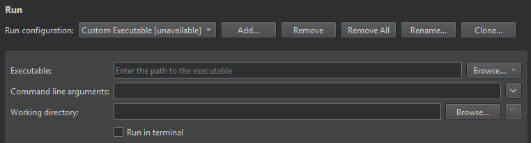

Specify a custom executable to run
If you use Meson or the generic project type, or want to run a custom desktop executable, create a Custom Executable run configuration for your project. For example, when working on a library, you can run a test application that links against the library.
To specify a custom executable to run:
- Select Add > Custom Executable.

- In Executable, specify the path to the executable.
- In Command line arguments, enter the path to the file to run.
See also Configure projects for running and Import an existing project.